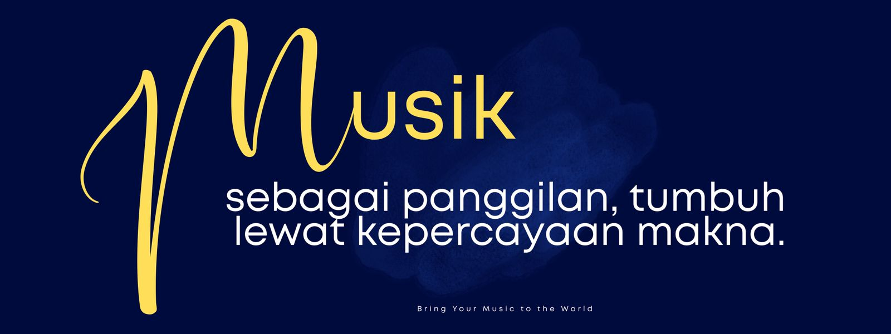
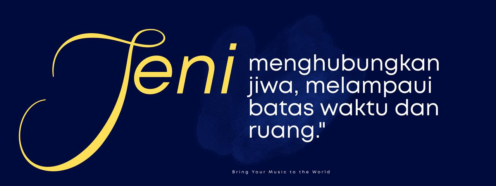
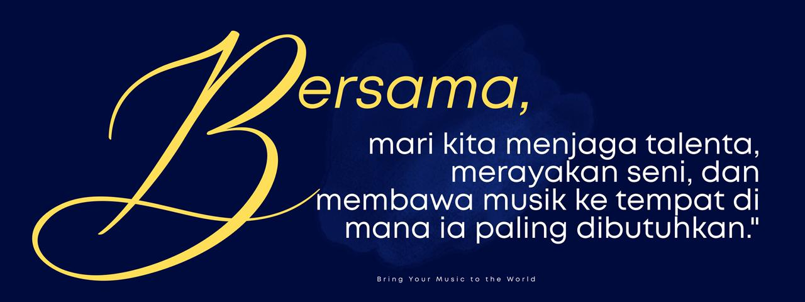

Mengkurasi Proyek Musik Klasik Berbasis Seniman di Panggung Internasional
Selamat datang di YMJ Stage
Sebuah platform yang digerakkan oleh seniman untuk mendukung musisi, mengembangkan proyek bermakna, dan menghubungkan visi artistik dengan panggung dunia.
Kami tidak sekadar mengelola karier. Kami mendampingi perjalanan artistik, membangun kolaborasi jangka panjang, serta mengkurasi proyek yang berlandaskan integritas artistik, kesadaran historis, dan hubungan manusiawi.
Situs ini adalah ruang perjumpaan untuk menjelajahi gagasan, mengenal inisiatif, dan membangun kemitraan lintas budaya.
Sebagai bagian dari Yayasan Musik Jakarta, YMJ berkomitmen pada keunggulan artistik serta dialog internasional antara Indonesia dan dunia.
Curating Artist-Led Classical Music Projects Worldwide
Welcome to YMJ Stage
An artist-driven platform where musicians are supported, guided, and connected from Indonesia to the world. We do not simply manage careers. We accompany artistic journeys, develop meaningful projects, and build bridges between creative vision and global stages.
This site is a meeting place to explore ideas, get to know initiatives, and build cross-cultural partnerships.
As part of Yayasan Musik Jakarta, YMJ is committed to artistic excellence and international dialogue between Indonesia and the world.
策划以艺术家为核心的国际古典音乐项目
欢迎来到 YMJ Stage
一个以艺术家为本，致力于支持音乐家成长、发展深度项目，并将艺术愿景与国际舞台相连的平台。我们并非只从事演出或职业管理。我们陪伴艺术旅程，培育长期合作关系。
这是一个相遇之地 探索创意、了解倡议、建立跨文化伙伴关系。
作为雅加达音乐基金会的一部分，YMJ 致力于在推动艺术卓越的同时，促进印度尼西亚与世界之间的艺术对话。
YMJ STAGE
Performance & Artist Management Division
A division of Yayasan Musik Jakarta
Membawa Seniman Indonesia ke Panggung Dunia melalui kolaborasi dan kreativitas
YMJ STAGE lahir dari keyakinan bahwa seni adalah ruang hidup — tempat gagasan bernapas, imajinasi bertumbuh, dan makna dibentuk melalui perjumpaan.
Di sini, para seniman tidak sekadar tampil, melainkan diajak untuk berproses, berdialog, dan berkembang dalam ekosistem yang menghargai keutuhan perjalanan artistik.
Di tengah laju teknologi dan kecerdasan buatan, kami percaya bahwa kreativitas manusia tetap menjadi cahaya utama. Bukan sekadar hasil akhir, tetapi cara berpikir, kepekaan rasa, dan keberanian untuk menafsirkan dunia adalah sumber daya yang tak dapat digantikan.
YMJ STAGE hadir sebagai jawaban bagi para pelaku seni — bahwa kreativitas tidak akan tergerus oleh teknologi, melainkan akan terus berkelanjutan ketika dirawat melalui kolaborasi yang jujur, ruang refleksi yang aman, dan visi artistik yang berpijak pada nilai kemanusiaan.
Melalui proyek pertunjukan yang dikurasi dengan kesadaran historis, kerja sama lintas budaya, serta pendampingan artistik yang berlandaskan integritas, YMJ STAGE membuka jalan bagi seniman Indonesia untuk hadir di panggung internasional bukan sekadar sebagai tamu, melainkan sebagai mitra dialog yang setara dalam percakapan seni dunia.
Di YMJ STAGE, seni tidak hanya dipresentasikan.
Ia dirawat.
Ia dipertanyakan.
Ia dipertemukan dengan dunia.
Tentang YMJ
Berbasis Seniman · Berlandaskan Relasi · Berorientasi Internasional
YMJ STAGE merupakan divisi Performance & Artist Management yang hadir untuk mendampingi proyek musik klasik—diprakarsai oleh seniman, dibangun melalui relasi, dan ditumbuhkan dengan visi jangka panjang.

Karier artistik yang berkelanjutan tumbuh melalui kepercayaan, tujuan bersama, dan relasi yang bermakna.
Di YMJ:
Seniman memperoleh arahan,
Proyek mendapatkan struktur,
Dan kolaborasi berkembang menjadi kemitraan jangka panjang.

Di sini,
seniman menemukan arahan,
proyek menemukan kejelasan,
dan kolaborasi menjadi persahabatan.
Artist-Led · Relationship-Based · Internationally-Oriented
YMJ Performance & Artist Management Division was founded to support artist-initiated classical music projects developed with long-term vision.
We believe that music is a calling, not a commodity.
Sustainable artistic careers grow through trust, shared purpose, and meaningful relationships.
At YMJ:
Artists receive guidance,
Projects gain structure,
And collaborations evolve into long-term partnerships.
Art connects souls, transcending time and space.
Here,
artists find guidance,
projects find clarity,
and collaborations become friendships.
以艺术家为本 · 以关系为基石 · 国际化导向
YMJ 演出与艺术家管理部致力于支持由艺术家发起、以长远愿景发展的古典音乐项目。
我们相信，音乐是一份使命，而非商品。
可持续的艺术生涯源于信任、共同愿景与有意义的关系。
在 YMJ：
艺术家获得指导，
项目获得结构，
合作发展为长期伙伴关系。
艺术连接灵魂，超越时空。
在这里，
艺术家找到指导，
项目找到清晰，
合作成为友谊。
Program
Beyond the Notes
Perayaan ulang tahun ke-40 YMJ di JIExpo dengan pertunjukan inovatif.
Pelajari Lebih LanjutIndonesia Open Competition (IOC)
Kompetisi tahunan yang menampilkan talenta musik terbaik Indonesia di panggung internasional.
Pelajari Lebih LanjutKonferensi Pendidik Musik
Konferensi yang mengumpulkan pendidik musik dari seluruh Asia Tenggara.
Pelajari Lebih LanjutNew York Audition Franz Liszt Piano Competition
Kompetisi piano internasional yang menampilkan pianis muda berbakat dari seluruh dunia.
Pelajari Lebih LanjutIndonesia Open Competition (IOC)
Kompetisi tahunan yang menampilkan talenta musik terbaik Indonesia.
Pelajari Lebih LanjutAsian Young Artists Showcase
Acara yang menampilkan musisi klasik muda paling menjanjikan dari seluruh Asia.
Pelajari Lebih LanjutSeri Konser Peringatan Dua Abad Wafatnya Beethoven
Siklus pertunjukan global memperingati 200 tahun wafatnya Beethoven.
Pelajari Lebih LanjutProgram Pertukaran Artis Internasional
Program pertukaran budaya yang menghubungkan musisi Indonesia dengan artis internasional.
Pelajari Lebih LanjutFestival Musik Klasik Asia Tenggara
Festival yang menampilkan musisi klasik terbaik dari seluruh Asia Tenggara.
Pelajari Lebih LanjutArtis

Jap–Yeo Duo
Biola & Piano
Jap–Yeo Duo mempertemukan pemain biola Jap Tji Kien dan pianis Dr. Kuei Pin Yeo dalam kemitraan jangka panjang yang berfokus pada musik kamar dengan kedalaman dan kejernihan artistik.
Jap–Yeo Duo
Violin & Piano
Jap–Yeo Duo brings together violinist Jap Tji Kien and pianist Dr. Kuei Pin Yeo in a long-term partnership focused on chamber music of depth and artistic clarity.

Dr. Kuei Pin Yeo
Pianis
Dr. Kuei Pin Yeo adalah pianis Indonesia terkemuka dan doktor musik pertama Indonesia dalam bidang piano performance.
Dr. Kuei Pin Yeo
Pianist
Dr. Kuei Pin Yeo is a prominent Indonesian pianist and Indonesia's first doctor of music in piano performance.

Jap Tji Kien
Violinis & Dirigen
Jap Tji Kien adalah salah satu violinis dan dirigen paling dihormati di Indonesia, penerima FRSM pertama di Asia Tenggara.
Jap Tji Kien
Violinist & Conductor
Jap Tji Kien is one of Indonesia's most respected violinists and conductors, the first FRSM recipient in Southeast Asia.
Proyek Unggulan
Beethoven Bicentennial Initiative (2027–2028)
Inisiatif Unggulan YMJ Performance & Artist Management Division
Di bawah Yayasan Musik Jakarta
Gambaran Umum
Dalam rangka memperingati 200 tahun wafatnya Ludwig van Beethoven, YMJ menginisiasi proyek artistik jangka panjang yang berfokus pada karya Beethoven untuk biola dan piano.
Perspektif Artistik
Karya Beethoven untuk biola dan piano menandai transformasi penting dalam sejarah musik kamar, dengan membangun relasi setara antara instrumen.
Lingkup Inisiatif
Inti dari proyek ini adalah keterlibatan berkelanjutan dengan repertoar Beethoven untuk biola dan piano, yang dikembangkan melalui studi jangka panjang.
Para Musisi
Beethoven Bicentennial Initiative dikembangkan dan dibawakan oleh Jap–Yeo Duo, kemitraan antara pemain biola Jap Tji Kien dan pianis Dr. Kuei Pin Yeo.
Format Proyek
- • Resital Tunggal - Program kurasi yang menampilkan sonata utama
- • Seri Pendek (2-3 konser) - Menelusuri evolusi gaya Beethoven
- • Siklus Lengkap - Siklus sonata biola-piano lengkap
- • Format Diperluas - Resital kuliah, Masterclass, Residensi
Beethoven Bicentennial Initiative (2027–2028)
Flagship Initiative of YMJ Performance & Artist Management Division
Under Yayasan Musik Jakarta
Overview
In commemoration of the 200th anniversary of Ludwig van Beethoven's death, YMJ initiates a long-term artistic project focusing on Beethoven's works for violin and piano.
Artistic Perspective
Beethoven's works for violin and piano mark a significant transformation in chamber music history, establishing equal relationships between instruments.
Initiative Scope
The core of this project is sustained engagement with Beethoven's violin and piano repertoire, developed through long-term study.
The Musicians
The Beethoven Bicentennial Initiative is developed and performed by Jap–Yeo Duo, a partnership between violinist Jap Tji Kien and pianist Dr. Kuei Pin Yeo.
Project Formats
- • Single Recital - Curated program featuring major sonatas
- • Short Series (2-3 concerts) - Tracing Beethoven's stylistic evolution
- • Complete Cycle - Complete violin-piano sonata cycle
- • Extended Format - Lecture recitals, Masterclasses, Residencies
贝多芬二百周年倡议（2027–2028）
YMJ 演出与艺术家管理部旗舰倡议
雅加达音乐基金会旗下
概述
为纪念路德维希·范·贝多芬逝世二百周年，YMJ 发起一项长期艺术项目，专注于贝多芬的小提琴与钢琴作品。
艺术视角
贝多芬的小提琴与钢琴作品标志着室内乐史上的重要转变，建立了乐器间的平等关系。
倡议范围
本项目的核心是通过长期学习与发展，持续参与贝多芬的小提琴与钢琴曲目。
音乐家
贝多芬二百周年倡议由 Jap–Yeo 二重奏开发并演出，这是小提琴家叶至坚与钢琴家杨圭斌博士的合作。
项目形式
- • 单场独奏会 - 精选主要奏鸣曲的节目
- • 短期系列（2-3 场） - 追溯贝多芬风格演变
- • 完整周期 - 完整的小提琴-钢琴奏鸣曲周期
- • 扩展形式 - 讲座独奏会、大师班、驻院项目
Media


Komunitas & Ajakan Bertindak
Undangan
Jika Anda seorang seniman, presenter, pendidik, pengelola, atau sahabat seni — kami menyambut Anda dengan hangat. Mari berbagi gagasan, menjalin keterhubungan, mencipta karya yang bermakna, dan membangun persahabatan melalui musik.

Bagi Seniman Indonesia
Temukan peluang, perwakilan, masterclass, kompetisi, dan platform pertunjukan.
Bagi Seniman Internasional
Berkolaborasi dengan kami — jelajahi bagaimana Anda dapat tampil, mengajar, berkolaborasi, atau tur di Indonesia.
Bagi Institusi & Penyelenggara
Kami menyediakan kurasi, konsultasi, dukungan pemesanan, dan layanan pengembangan proyek.
Bagi Teman & Pendukung
Tetap terhubung — bergabunglah dengan komunitas kami.
Formulir Pendaftaran Singkat:
Invitation
If you are an artist, presenter, educator, manager, or friend of the arts — we welcome you warmly. Let's share ideas, build connections, create meaningful works, and build friendships through music.
Together, let's nurture talent, celebrate art, and bring music where it's needed most.
For Indonesian Artists
Discover opportunities, representation, masterclasses, competitions, and performance platforms.
For International Artists
Collaborate with us — explore how you can perform, teach, collaborate, or tour in Indonesia.
For Institutions & Presenters
We provide curation, consultation, booking support, and project development services.
For Friends & Supporters
Stay connected — join our community.
Quick Registration Form:
邀请
如果您是艺术家、演出者、教育者、管理者或艺术朋友——我们热烈欢迎您。让我们分享创意，建立联系，创作有意义的作品，通过音乐建立友谊。
携手同行，让我们培养才华，庆祝艺术，将音乐带到最需要的地方。
印尼艺术家
发现机会、代表、大师班、比赛和演出平台。
国际艺术家
与我们合作——探索您如何在印尼演出、教学、合作或巡演。
机构与主办方
我们提供策划、咨询、预订支持和项目开发服务。
朋友与支持者
保持联系——加入我们的社区。
快速注册表：
Kontak
info@yayasanmusikjakarta.org
Website
www.yayasanmusikjakarta.org/performance-artist-management
info@yayasanmusikjakarta.org
Website
www.yayasanmusikjakarta.org/performance-artist-management
电子邮箱
info@yayasanmusikjakarta.org
网站
www.yayasanmusikjakarta.org/performance-artist-management
Event Title
Artist Detail
Galeri Lengkap